В Алматы неравнодушный парень вырвал щенка у разъярённой хозяйки. Женщина публично издевалась над животным и с агрессией кидалась на прохожих, размахивая щенком, как орудием.
Алматинские паблики и социальные сети накрыла волна возмущения и гнева из-за жестокого обращения женщины с животным. Изначально в сети появились кадры с испуганным, мокрым и обессиленным щенком в автобусе. По словам очевидцев, собака в руках хозяйки была полностью беззащитна.
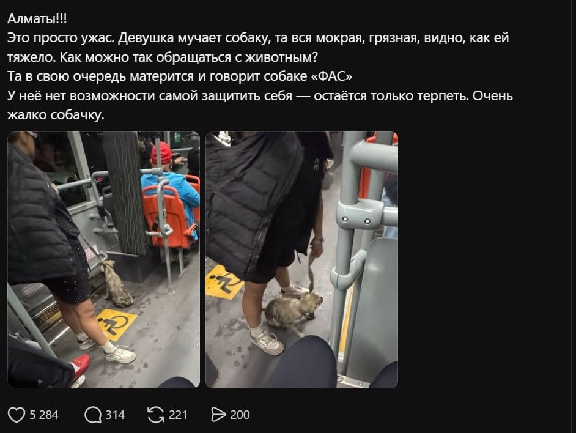
Фото из автобуса, опубликованное в соцсетях
Затем в социальных сетях появилось видео: прохожие делают героине замечание, а она агрессивно реагирует, пытается догнать их и ударить тем же щенком. Один из парней увернулся и сумел забрать щенка себе.
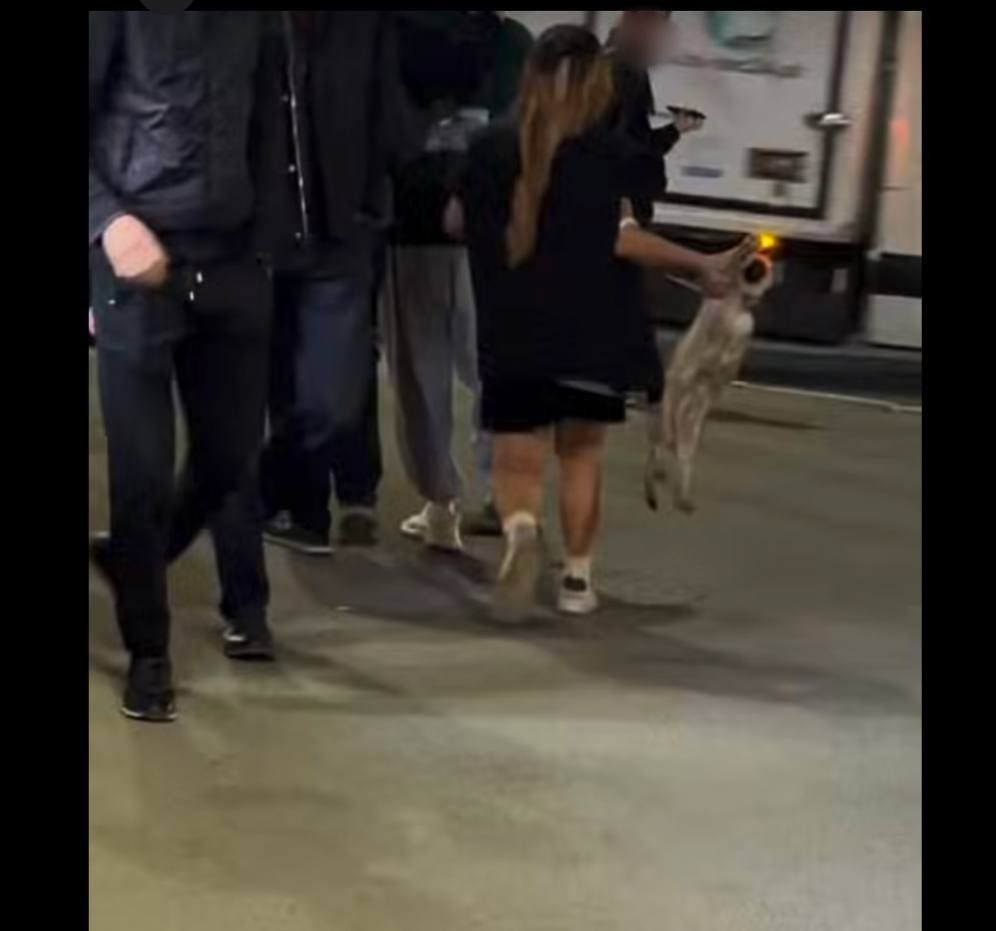
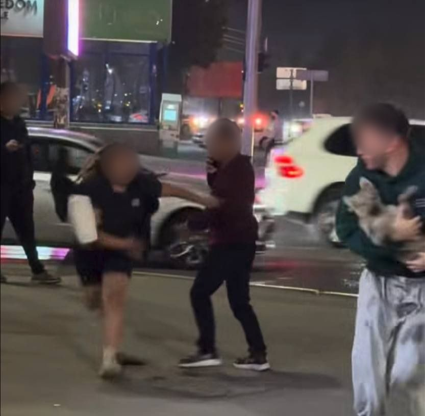
Кадры из видео очевидцев. Лица размыты редакцией
«Собака в руках хозяйки была полностью беззащитна», — рассказывают очевидцы.
Сейчас щенок получил ветеринарную помощь и уже нашёл новый дом. По факту жестокого обращения с животным проводится проверка, устанавливаются обстоятельства и личности участников происшествия, сообщили в ведомстве.
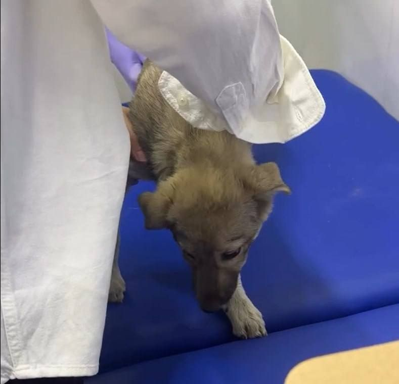
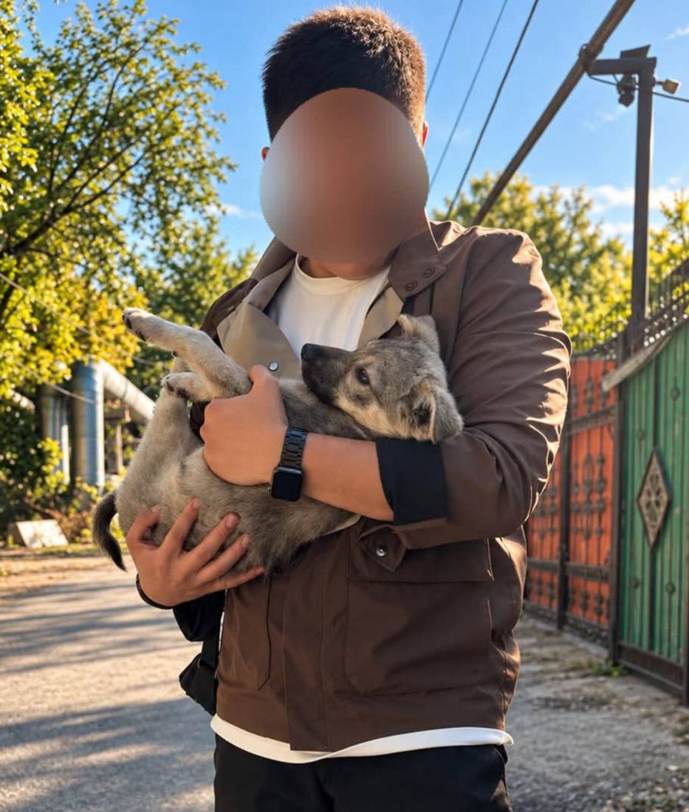
Щенок у ветеринара и с новым хозяином. Фото из соцсетей
Учебное задание. Заявление написано учеником и не является официальным заявлением Sony.
Текст ученика
44 слов · 1 абз.
Сегодня ночью пользователи PlayStation по всему миру столкнулись с невозможностью войти в свои аккаунты, загружать купленные игры и играть онлайн. Проблема затронула пользователей США, Европы и Азии. Представители компании подтвердили наличие неполадок в работе серверов и заявили, что инженеры уже работают над устранением проблемы.
Текст ИИ
87 слов · 1 абз.
В современном цифровом мире стабильность онлайн-сервисов играет ключевую роль для миллионов пользователей. В настоящее время глобальная сеть PlayStation Network столкнулась с определёнными техническими трудностями, которые вызывают временные неудобства у игроков в разных уголках планеты. Многие геймеры отмечают, что не могут подключиться к любимым виртуальным мирам и воспользоваться цифровыми услугами. Специалисты и эксперты индустрии активно наблюдают за развитием ситуации. Ожидается, что высококвалифицированная команда инженеров делает всё возможное для скорейшего исправления возникших неполадок и восстановления полноценного функционирования всех систем. Пользователям рекомендуется проявлять терпение и следить за официальными обновлениями.
Разбор
Текст ИИ
Поверхностный, размытый месседж: нет чёткости и ясности, отсутствует конкретика. Низкая информационная ценность, много текста, мало сути.
Мой текст
Структура первичной новости. Её задача — максимально быстро сообщить факт сбоя и его масштаб: суть → детали → реакция компании. Нейтральный стиль.
Официальное заявление Sony
Уважаемые пользователи, партнёры и инвесторы!
В течение последних часов часть сервисов Sony PlayStation Network функционировала с ограничениями. В 02:00 UTC во время планового обновления серверов, затрагивающего авторизацию, произошёл сбой синхронизации баз данных. Это привело к временной невозможности входа в аккаунты, загрузки контента и доступа к сетевым режимам для пользователей сервиса.
Мы провели проверку систем защиты и хотим сообщить, что ваши данные находятся в безопасности. Сбой был вызван исключительно внутренним техническим фактором, внешних атак не выявлено. Все персональные и финансовые данные пользователей оставались в полной безопасности.
В 06:30 UTC работа серверов была полностью стабилизирована.
Информация для инвесторов
Инцидент локализован и не несёт финансовых или операционных рисков для партнёров. Для предотвращения подобных сбоев внедрён дополнительный круг проверки.
Информация для пользователей
Всем активным пользователям подписки PlayStation Plus срок действия подписки автоматически продлён на 3 дня.
Если у вас всё ещё наблюдаются проблемы с подключением или синхронизацией данных, перезагрузите консоль или воспользуйтесь разделом поддержки на нашем официальном сайте, чтобы связаться со специалистами.
Приносим искренние извинения за доставленные неудобства и благодарим за спокойствие и терпение.
С уважением, команда Sony.
Человек против ИИ
Дияр Серік
Тема: Фильм «Жеті қарақшы»
Учебное задание. Фильм и факты о нём реальные.
Текст ученика
“7 қарақшы”: окупится ли самый дорогой фильм Казахстана?
203 слов · 5 абз.
24 сентября в казахстанский прокат вышел фильм Қуаныша Бейсека “7 қарақшы” в жанре истерн. Фильм был снят за рекордные для отечественного кино 720 млн тенге. О чем повествует самый дорогой фильм страны и сможет ли он собрать кассу?
“7 қарақшы” это не типичное историческое кино. События фильма происходят в “параллельной”, по словам режиссера, вселенной, в которой руководство страны прибегает к помощи разбойников для предотвращения испытаний ядерного оружия. По классике жанра зритель будет наблюдать множество динамичных сюжетных арок, которые повлияют на ход всей истории.
Выход подобного фильма в свет является большой редкостью не только для казахстанского кинематографа, но и для большого кино в целом. Режиссер фильма Қуаныш Бейсек ранее уже успешно экспериментировал с жанровым кино в Казахстане, собрав рекордные кассовые сборы за картину “Дәстүр”.
Однако зрители и критики ставят под сомнение дальнейший финансовый успех фильма. Независимый автор и кинокритик Рамазан-Малик Елеусиз в рецензии для 98mag назвал фильм “мальчишеской попыткой переснять свои любимые фильмы”, ссылаясь на сходство с фильмами “Бесславные ублюдки”, “Отряд самоубийц”, “Олдбой” и еще десятками других успешных блокбастеров.
Станет ли кинокартина очередным успешным кейсом режиссера-энтузиаста или останется в истории как кассовый провал подобно фильму “Томирис”, определит лишь зритель.
Текст ИИ
«Жеті қарақшы»: истерн, который проверит частные деньги в казахстанском кино
101 слов · 3 абз.
24 сентября в прокат вышел исторический экшен Куаныша Бейсека «Жеті қарақшы» («Семеро разбойников»). Это самый дорогой фильм в истории отечественного кино, и снят он полностью на частные инвестиции.
Сюжет. Конец 1970-х. Семерых казахских разбойников, у каждого из которых своя криминальная «специализация», собирают для секретной операции против советского режима: им нужно сорвать ядерное испытание на Семипалатинском полигоне. Жанр фильма — истерн, редкий для Центральной Азии.
Команда. Режиссёр Куаныш Бейсек известен по фильму «Дәстүр». В главных ролях Еркебулан Дайыров, немецкий актёр Винценц Кифер («Джейсон Борн»), Азат Жумадил, Ашим Ахметов, Шугыла Ешенова и другие. Участие европейской звезды показывает, что создатели рассчитывают на международный прокат.
Разбор
Структура
Я начинаю с даты выхода, бюджета и вопроса, который проходит через весь текст: о чём фильм и соберёт ли он кассу. Дальше идут сюжет, прошлый успех режиссёра, мнение критика, а в конце я возвращаюсь к вопросу из лида. ИИ построил текст как справку: лид, потом блоки с пометками «Сюжет» и «Команда». Вывода у него нет, текст обрывается на списке актёров.
Факты
У меня есть то, чего нет у ИИ: точный бюджет (720 млн тенге), мнение критика со ссылкой на рецензию и сравнение с «Томирис». ИИ называет фильм самым дорогим, но не приводит цифру. Зато у ИИ больше конкретики о самом фильме: конец 1970-х, Семипалатинский полигон, частные инвестиции, имена актёров. В моём тексте этого нет. При этом ИИ пересказывает анонс, вышедший до премьеры, поэтому пишет так, будто фильм ещё не в прокате: «создатели рассчитывают на международный прокат».
Ошибки
В моём черновике были опечатки и повтор слов, а цитату критика я сначала привёл неточно.
Антикризисное сообщение
Ситуация вымышлена, сообщение не является заявлением реального банка.
Уважаемые клиенты!
Сегодня в работе ИИ-ассистента нашего приложения произошёл сбой. Мы получили информацию, что у части пользователей он давал некорректные ответы. Приносим извинения за неудобства и просим сохранять спокойствие. Мы уже отключили ассистента. Остальные функции приложения работают штатно, и ни одна операция не проводится без вашего подтверждения.
ИИ-ассистент не собирает никакую вашу информацию, так что поводов для беспокойства нет.
Специалисты уже выясняют причины сбоя. Если вы заметили операции, которых не совершали, обратитесь в службу поддержки.
О результатах проверки мы сообщим через официальные каналы банка.
Благодарим вас за доверие и понимание.
Рубежный контроль 1
В AlmaU появятся зарядные станции NetCharge: как инициатива студента меняет университет
Уже в ноябре 2026 года студенты AlmaU смогут арендовать пауэрбанки прямо в университете
Скоро студенты AlmaU смогут арендовать пауэрбанки прямо в университете и заряжать свои устройства в любое время, не разыскивая свободную розетку. Идея появилась благодаря инициативе первокурсника Вадима Травина, который решил найти простое решение своей повседневной проблемы.
Однако за этим проектом стоит не только новый сервис, но и пример того, как студенческая инициатива может повлиять на университетскую среду. Подробностями проекта поделился Вадим Травин, курирующий его реализацию.
Вадим, как вам пришла идея установить зарядные станции?
— Мне пришла простая мысль: найти возможность заряжать телефон без розеток. Изначально я приобрёл пауэрбанк, но часто забывал его дома или не успевал зарядить. Тогда я задумался: почему в университете не может быть общих пауэрбанков? После этого начал искать, как организовать такую возможность.
Как вы приступили к реализации проекта?
— Я связался с поддержкой компании NetCharge и через неё вышел на главного менеджера — Мэлса С. Я предложил организовать встречу с администрацией университета, чтобы обсудить установку станций. Мэлс согласился и оставил свой номер для связи. Затем я обратился в Управление инфраструктуры университета для обсуждения реализации.
Где планируется установить станции?
— Мы планируем установить их в буфете на первом этаже.
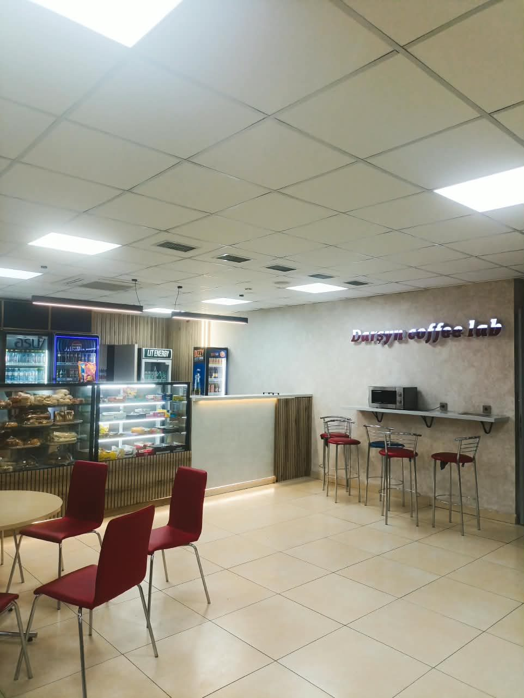
Буфет на первом этаже, где планируют установить станции
Университет начинается с инициативы студентов
История Вадима показывает, что улучшение университетской среды не всегда начинается с масштабных решений администрации. Иногда достаточно заметить повседневную проблему, предложить идею и самостоятельно найти людей, готовых помочь воплотить её в жизнь.
Путь инициативы
ИдеяВадим часто забывал пауэрбанк дома и решил, что в университете нужны общие
Сделано
Выход на NetChargeСвязался с поддержкой компании и получил контакт менеджера Мэлса С.
Сделано
Управление инфраструктурыВадим пришёл к директору Зайтуне Камалеевне с предложением
Сделано
Переговоры с компаниейУниверситет и NetCharge обсуждают реализацию и сотрудничество
Идёт сейчас
Беседа с отделом маркетингаПоследний шаг согласования условий
Впереди
ЗапускСтанции в буфете на первом этаже, ноябрь 2026 года
Впереди
Что говорит администрация AlmaU?
Чтобы узнать, как университет поддерживает подобные инициативы, наша редакция также посетила Управление инфраструктуры и поговорила с его директором Зайтуной Камалеевной.
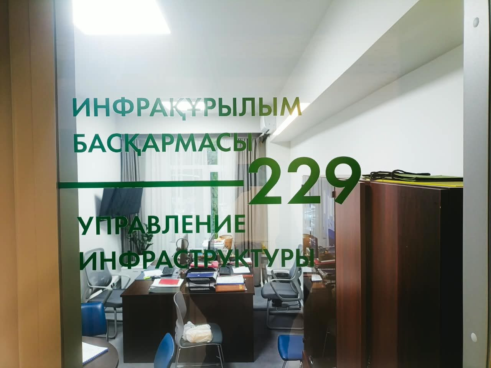
Кабинет Управления инфраструктуры AlmaU
«Вадим сам пришёл ко мне с инициативой установки станций. Я связалась с Мэлсом С., и мы начали вести переговоры с компанией о реализации идеи и дальнейшем сотрудничестве. Для уточнения условий сотрудничества осталось провести беседу с отделом маркетинга», — рассказала Зайтуна Камалеевна.
NetCharge: как работает сервис?
Мы также обратились к Мэлсу С., старшему менеджеру NetCharge, чтобы узнать больше о компании и её работе. По словам представителя компании, NetCharge работает на рынке около года, а сеть насчитывает порядка 1200 точек в разных городах.
≈1 годработает NetCharge на рынке
≈1 200точек в разных городах
Ноябрь 2026запуск в AlmaU
Сервис позволяет арендовать портативное зарядное устройство. Это особенно удобно для студентов, которые проводят в университете большую часть дня, перемещаются между корпусами и не всегда могут найти свободную розетку.
Станция аренды пауэрбанков
А сколько стоит аренда?
«Аренда пауэрбанка будет стоить 499 тенге за час и 1299 тенге за сутки. Такой формат позволяет выбрать подходящий вариант в зависимости от того, насколько долго необходимо пользоваться зарядным устройством», — добавил Мэлс С.
Чтобы воспользоваться сервисом, достаточно получить пауэрбанк через зарядную станцию и вернуть его в соответствии с правилами аренды.
Что думают студенты
Наша редакция также опросила студентов AlmaU, чтобы выяснить, насколько востребованным может оказаться новый сервис.
«Это полезная инициатива, особенно для тех, кто много времени проводит в университете. Я бы попробовал такой сервис».
«Мне кажется, это очень удобно: не нужно постоянно носить с собой собственный пауэрбанк. Можно просто взять его при необходимости и вернуть после использования».
«Думаю, это будет востребовано среди студентов, особенно если зарядные станции разместят в удобных местах. Не всегда есть возможность найти розетку между парами».
Большая часть опрошенных положительно отреагировала на новость о появлении аренды пауэрбанков в университете. Это показывает, что идея может отвечать реальной повседневной потребности студентов.
Что дальше?
Появление NetCharge в AlmaU — это не только возможность зарядить телефон между парами. Это пример того, как личная идея студента может перерасти в проект, полезный для всего университетского сообщества. Вадим заметил проблему, связался с компанией и обратился к администрации.
Теперь проекту предстоит пройти оставшиеся этапы согласования перед запуском, запланированным на ноябрь 2026 года. А насколько востребованным окажется новый сервис, покажет его запуск.
Источники и материалы
Интервью с инициатором проекта: Вадим Травин, студент 1 курса AlmaU.
Комментарий администрации: Управление инфраструктуры AlmaU, директор Зайтуна Камалеевна.
Информация о сервисе и ценах: комментарий старшего менеджера компании NetCharge Мэлса С.
Справочные данные: статистика и показатели сети аренды пауэрбанков NetCharge (официальные данные компании).
Социологические данные: блиц-опрос студентов Алматы Менеджмент Университета (AlmaU), октябрь 2026 года.
Интервью
Олжас Нурбай: «Кино стоит снимать только ради себя»
23 октября 2026 · Интервьюер: Дания Саликова
Он отучился на экономиста, но, поработав по специальности, понял, что не хочет посвящать этому жизнь. Сегодня Олжас Нурбай — режиссёр, который снимает полнометражные фильмы и пишет сценарии о том, о чём в индустрии кино предпочитают молчать.
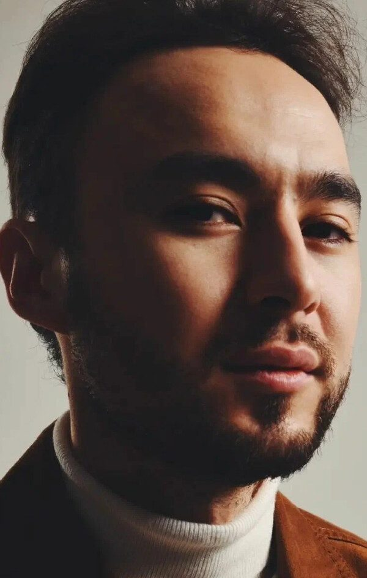
Олжас Нурбай. Фото из открытых источников
Олжас Нурбай — режиссёр, продюсер и сценарист, автор фильма и сериала «Мошенники», картин «Мошенники-2» и «Любовь со второго взгляда», а также сериалов «Саке», «Бажа» и «Скорая». За его плечами магистратура New York Film Academy в Лос-Анджелесе и приз «Лучший режиссёр» на Barcelona Planet Film Festival (2017) за короткометражку «The Boon».
В казахстанском кино сегодня происходит резкий рост. Отечественные картины собирают кассу и залы наравне с голливудскими. Аудитория снова растёт, а вместе с ней у авторов растёт и соблазн снимать кино, которое в первую очередь соберёт кассу.
Мы поговорили с Олжасом о том, как не потерять собственный голос, почему провал первого полного метра стал его главным уроком, какие темы казахстанскому кино пора поднимать и что сказать тем, кто сидит на парах по контенту и мечтает о съёмочной площадке.
Путь Олжаса Нурбая
2011
Первая роль в киноКанат в фильме «Болашак»
2016–2017
New York Film AcademyМагистратура по режиссуре кино и медиа в Лос-Анджелесе, дебютная короткометражка «The Joke»
2017
«Лучший режиссёр»Приз Barcelona Planet Film Festival за короткометражку «The Boon»
2023
Сериал «Мошенники»Режиссёр и актёр, 12 серий
2024
«Любовь со второго взгляда»Режиссёр, совместно с Василием Куценко
2026
Фильм «Мошенники» и «Мошенники-2»Полнометражная версия и продолжение истории
Какую роль музыка играет в вашем творчестве? Бывает ли, что трек или музыкальный мотив порождает целую сцену или концепцию кадра?
— Музыка играет в моих фильмах большую роль. Хотя в последнее время я стараюсь не усиливать сцену музыкой, а делать акцент на самой истории и больше работать с киноязыком. Но кино без музыки быть не может.
Какие темы, по вашему мнению, сегодня остаются табуированными или недосказанными в казахстанском медиапространстве, но о них жизненно важно начать говорить через кино уже завтра?
— Большая табуированная тема — подростковые суициды. Статистика плачевная, но об этом не говорят. Я уже написал об этом историю, но пока не могу получить поддержку.
Дальше я хотел бы поднимать тему психологии: людям нужно разговаривать. И отдельно — о том, что среди мужчин очень высок процент самоубийств. Вот эти темы надо поднимать.
Насколько ваши личные переживания, жизненный опыт или люди из окружения просачиваются в персонажей? Есть ли в ваших проектах автобиографические сцены, которые зрителю кажутся чистой выдумкой?
— Есть такое выражение: чем опытнее режиссёр в жизни, тем лучше его кино. Жизненный опыт сильно влияет на проект, который ты делаешь, и на то, о чём ты говоришь. Личные переживания — это всё.
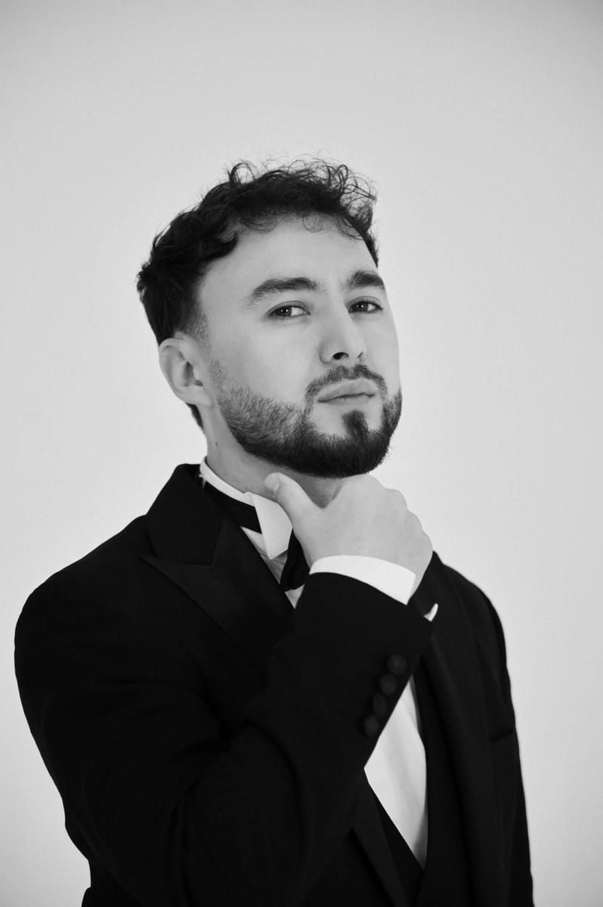
Олжас Нурбай. Фото из открытых источников
В творческой среде неудачи воспринимаются болезненно, хотя именно они часто учат большему, чем триумф. Какой самый суровый урок преподнесла вам индустрия?
— Я полностью согласен, в моём случае именно неудача стала большим уроком. Это мой первый полнометражный фильм «Қораға кірдік» — про пельмени. Я возлагал на него большие финансовые надежды, и в этом, наверное, и была моя главная ошибка. Не нужно было думать про финансы, нужно было думать про само кино и правильно разграничивать обязанности. Эта неудача дала мне много инсайтов, и я особенно благодарен этому фильму.
Сейчас идут жаркие споры о том, нужно ли академическое образование в творчестве. Имеет ли вес диплом режиссёра в нашем кино сегодня?
— А почему бы не получить и то, и другое? Каждый решает сам. Но база знаний — это фундамент, на котором ты стоишь, и недооценивать её не нужно.
О кумирах, коммерции и смелости попробовать
У каждого режиссёра в начале пути есть ориентиры — те, чьи работы заставляют сказать себе: «Я хочу делать так же». Кто послужил таким толчком для вас?
— У меня это Нолан, Чаплин, Шакен Айманов, Тарантино, Гай Ричи.
Казахстанское кино сейчас переживает резкий скачок, и вместе с ростом аудитории появляется соблазн снимать то, что гарантированно продастся. Как вам удаётся сохранить собственный голос, когда коммерческий успех начинает диктовать свои правила?
— Нет никаких гарантий, что что-то обязательно продастся, иначе все бы этим занимались. Такие попытки были и с моей стороны, и со стороны других продюсеров и режиссёров. Это большая лотерея, и на результат влияет очень много факторов.
Кристофер Нолан доказал, что можно снимать своё авторское кино и при этом быть коммерчески успешным. Противопоставлять их друг другу — очень стереотипное мышление, которое нам навязали.
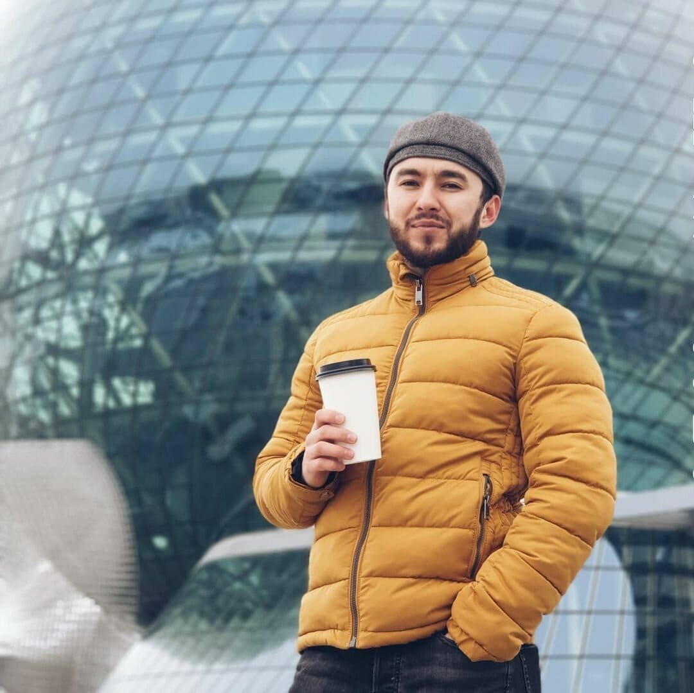
Олжас Нурбай. Фото из открытых источников
Изначально вы учились на экономиста, но в итоге резко сменили вектор. В какой момент вы окончательно поняли, что хотите снимать?
— Это произошло очень плавно. Всё рождается из внутреннего недовольства, я просто прислушался к себе. Я немного поработал экономистом, не хотел посвящать этому всю жизнь и не видел там перспективы. Большие финансовые обещания меня особо не грели, и я решил рискнуть.
Но это не было одномоментным решением, всё происходило в течение года. Здесь важно слушать себя.
Многие сегодня находятся в похожей ситуации: сидят на парах по экономике, мечтают о съёмочной площадке, но боятся сделать первый шаг. Что бы вы им сказали? И ради чего вообще стоит проходить этот путь?
— Если боятся — пусть хотя бы попробуют. Я тоже боялся. Я не мечтал о большой съёмочной площадке, я просто хотел попробовать. Не прыгать в воду, не зная её температуры, а сначала опустить туда руку и посмотреть, понравится или нет.
Молодёжь сейчас пытается сразу определиться с будущим так, чтобы успех был гарантирован. Но в жизни так не бывает: она может развернуть тебя как угодно. Нравится, интересно — попробуй. Может не понравиться, а дальше просто решай проблемы по мере их поступления.
Поэтому будьте добрее к себе и слушайте себя. Этот непростой путь в кино стоит проходить только ради себя. Если вам это не нравится и не отзывается внутри — смысла нет.
Будьте добрее к себе и слушайте себя
— Олжас Нурбай
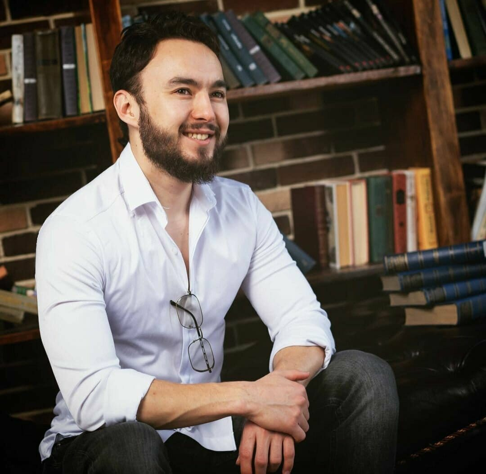
Олжас Нурбай. Фото из открытых источников
Вместо вывода
Путь Олжаса Нурбая — от экономиста до режиссёра «Мошенников» — не был ни быстрым, ни гарантированным. Он прошёл через учёбу в Лос-Анджелесе, награду на фестивале и провал первого полного метра, который сам называет главным уроком.
Его совет тем, кто только думает о кино, звучит просто: не ждать гарантий, а попробовать и честно спросить себя, отзывается ли это дело внутри. Коммерция и авторский голос, по его словам, не враги, но снимать стоит прежде всего ради себя.
Компания подтверждает факт инцидента, произошедшего во время проведения корпоративного мероприятия на природе.
В ходе фотосессии курица, привлечённая для участия в фермерском конкурсе, покинула обозначенную организаторами территорию и направилась в сторону соседнего жилого комплекса.
Мы относимся к произошедшему со всей серьёзностью. Безопасность участников, животных и окружающих является для нас приоритетом. В настоящее время мы уточняем обстоятельства инцидента и принимаем меры для благополучного возвращения животного.
Приносим извинения жителям соседнего жилого комплекса за возможные неудобства.
Благодарим всех, кто сообщил о местонахождении курицы и помогает в её поиске. Дополнительная информация будет опубликована по мере подтверждения обстоятельств.
Мы признаём: этот тимбилдинг оказался более динамичным, чем планировалось.
Ответ компании в Instagram
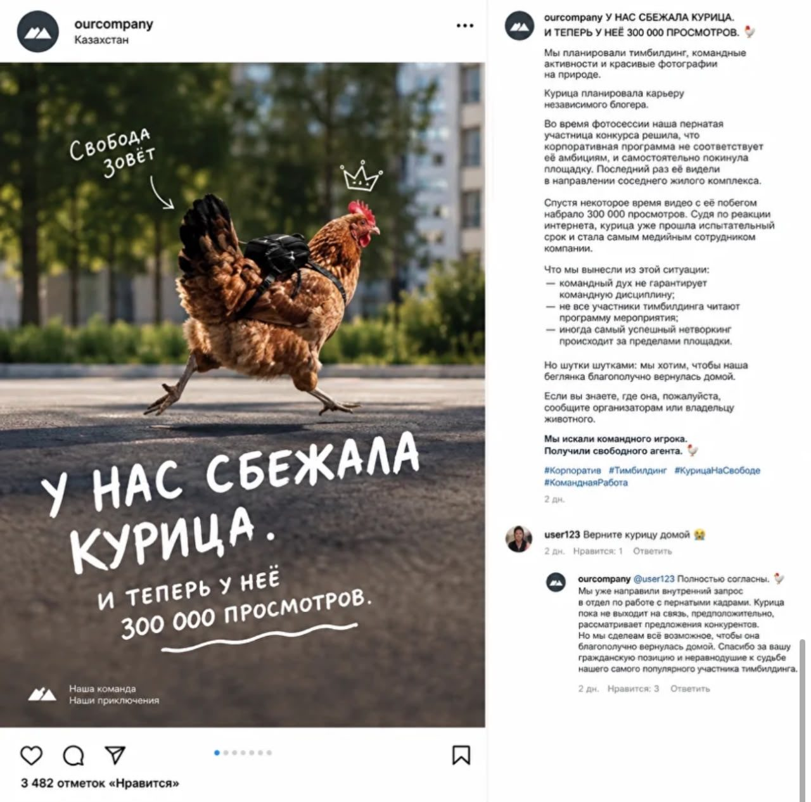
Пост компании в Instagram и ответ на комментарий подписчика